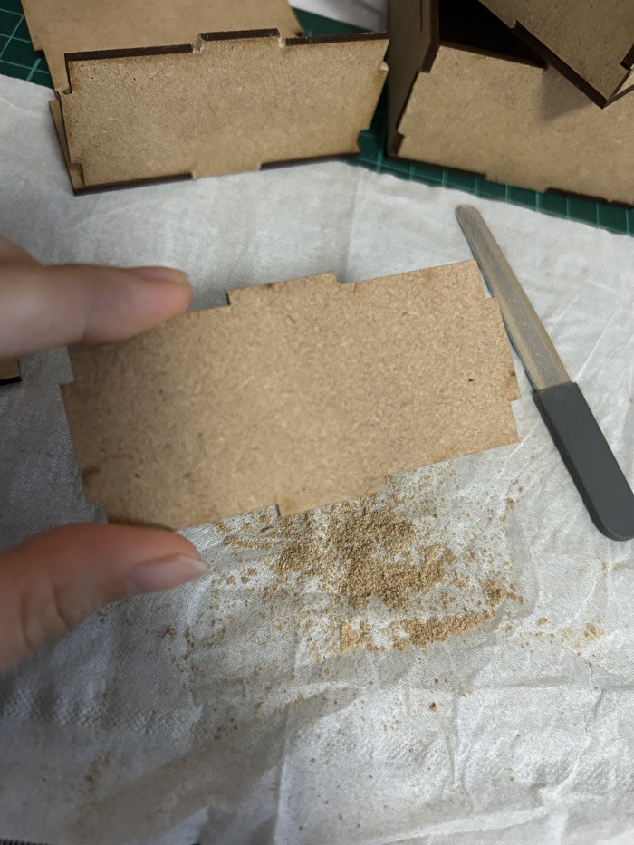
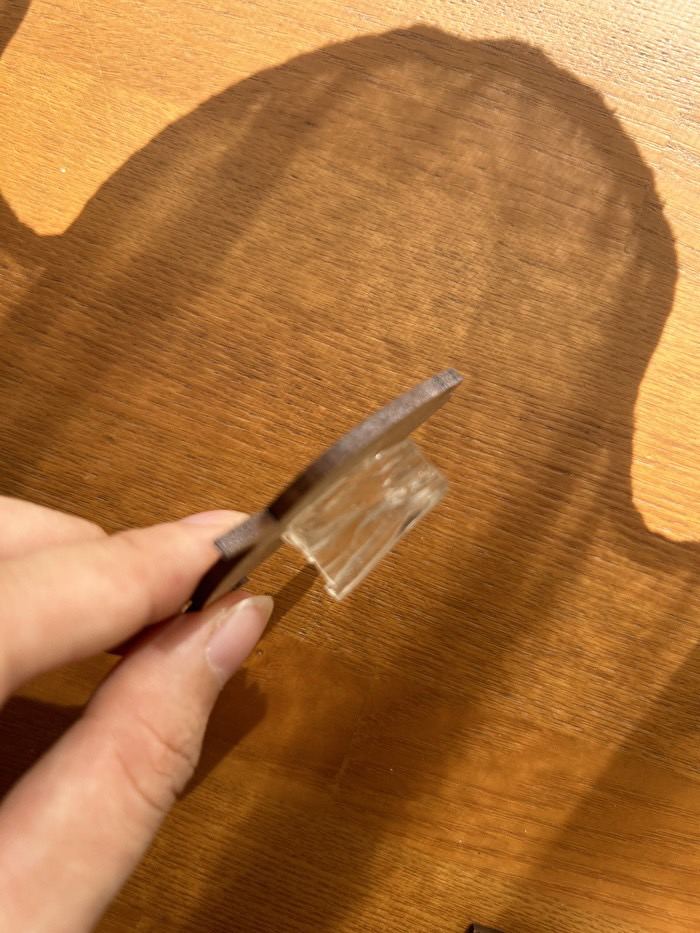
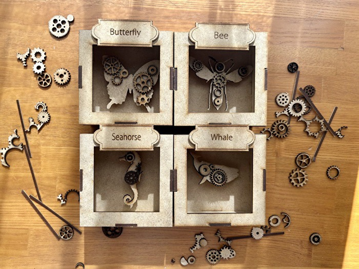
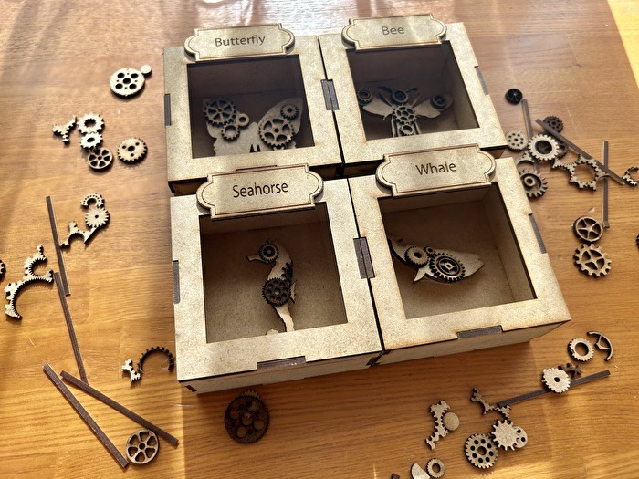
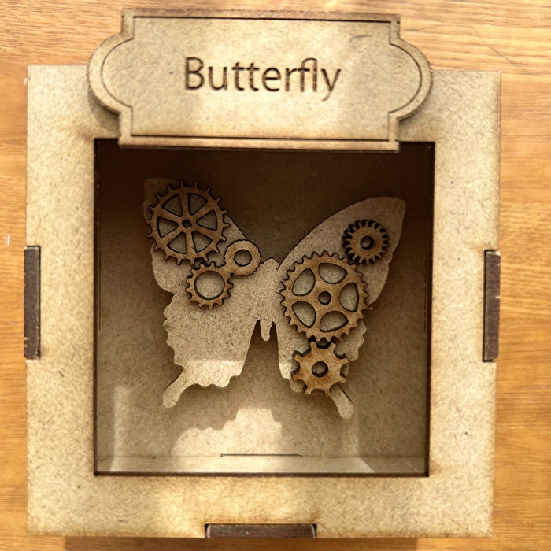
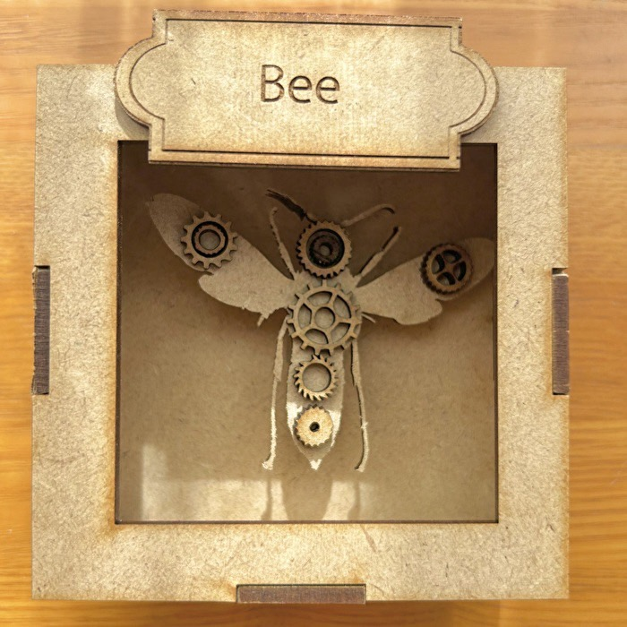
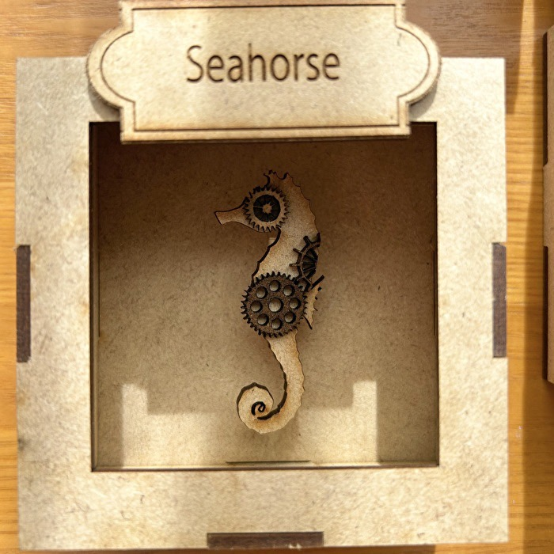
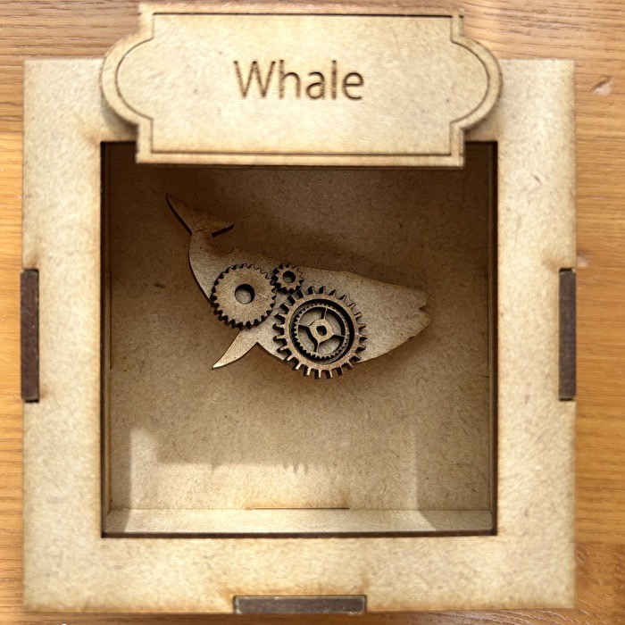

【構想】
レザーカッターで人の心を動かすものを作るというお題が出されたときすぐに標本を作ろうと決めました。
ちょうど最近紙とシールで標本もどきを作ってそれが可愛かったので木で作ったらもっと可愛いだろうなと思ったのがきっかけです。
標本は大勢のコレクターがいるくらい人を惹きつける魅力がある物です。その中でも自分で製作したものは格別でしょう。さらに私は中にオリジナルの生物を閉じ込めておくことで何度見ても心ときめく標本を作ることにしました。
【計画】
作るものはすぐに決まったので簡単にスケッチをして、その後サイズを考えました。
に収まるような箱を作って中にメインの生き物を入れる想定です。
【制作】
今回初めてIllustratorを使ってカットの元になる下絵を作ったのですが、あまりの簡単さに驚きました。やはり課金の力は違う、、
最初は蝶と蜂の二つでちょうど板の半分のサイズに収まるように作っていたのですが、楽しくなって海の生き物も閉じ込めたくなり板を丸々一枚使って作りました。反省します。
生き物はそのままだとつまらないので歯車のパーツもカットしてスチームパンク風な生物にすることにしました。標本によくありがちなネームタグも作って下絵完成です。
参考:
Illustratorでカットパスを作る方法② ～パスのオフセット・単純化編～
【カット】
早速下絵をレーザーカットします。
なんとなく3Dプリンターと同じような性能だと思っていましたが、レーザーカッターはものすごく細かいところまで綺麗にカットできました。またカットの時間も思っていた何倍も速く、感動しました。値段が高いのには理由がありますね。
【組み立て】
カットしたものを組み立てます。
箱を組み立てようとしたらどう考えても凸凹のサイズが合っておらずはまりません。
仕方なく一つ一つネイル用のヤスリで削りました。

中の生き物は箱と少ししか空洞ができて影があるくらいがリアルで可愛いのでナノテープという厚みのある両面テープのようなもので高さを出して貼りました。

最後にいい感じに歯車を乗せて完成です。
【完成品】






可愛い！！！！
思っていた以上の物ができて感激です。
歯車のパーツは彫刻を入れた物とカットしただけのものがあるので色の違いが出て、より味がある作品に仕上がりました。タツノオトシゴがお気に入りです。スチームパンクの世界観が好きな人や標本が好きな人にはブッ刺さるものができました。満足です。
【感想】
今回初めてレーザーカッターを使ったのですが、レーザーでカットしているので断面が焦げて深い茶色になっているのがまた味が出て素敵でした。
またIllustratorも初めて使ったのですがあれはお金をかける価値があるものだと実感しました。前回のピンセット作りであんなに苦労した下絵が一瞬で出来て作るのがさらに楽しくなりました。
今回の課題でレーザーカッターの魅力に気づいてしまったので神大生のうちにたくさん活用したいと思います。